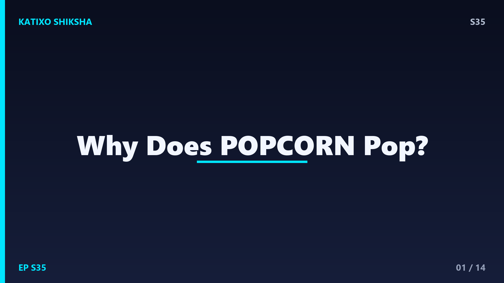
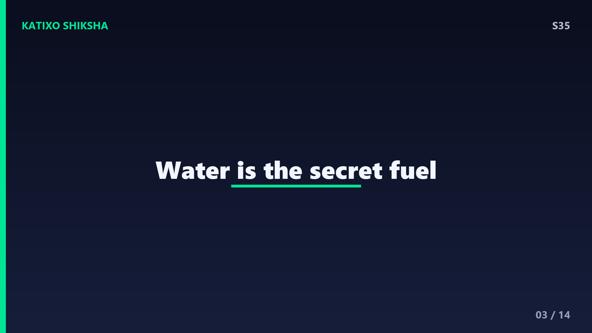
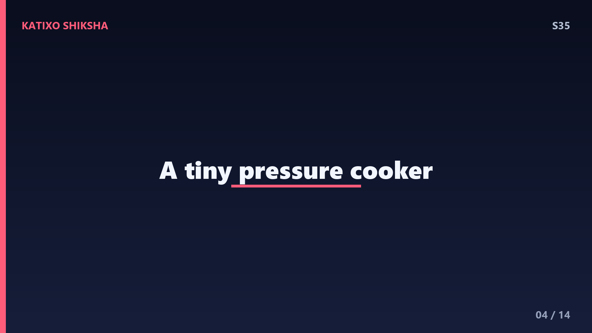
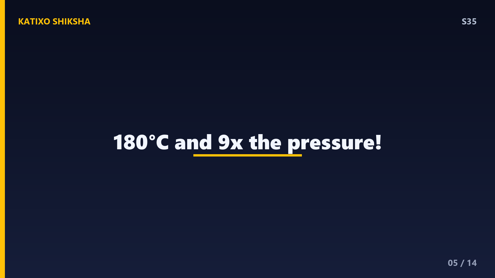
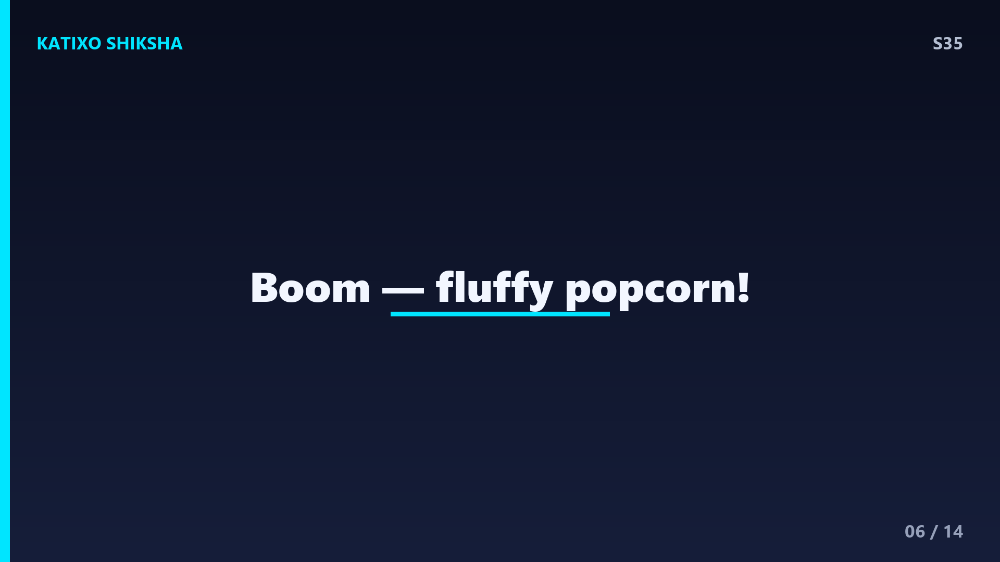
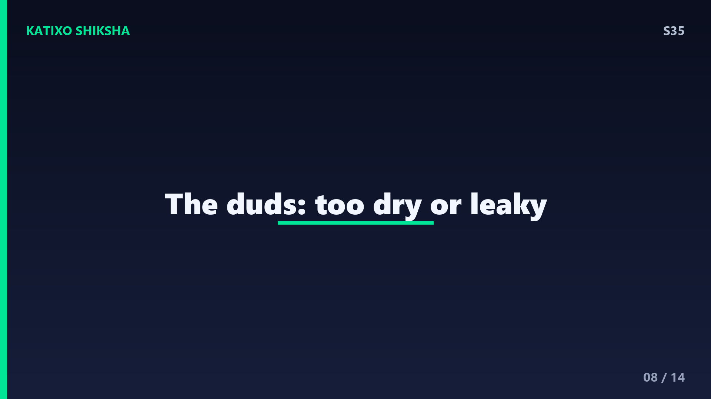
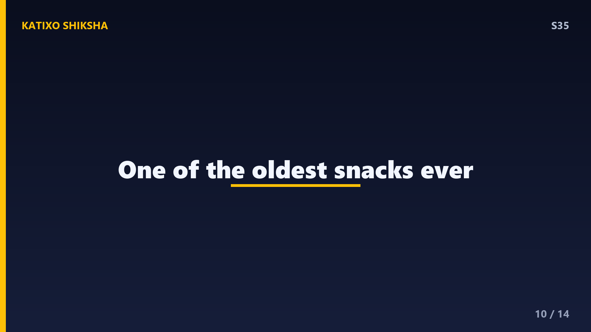
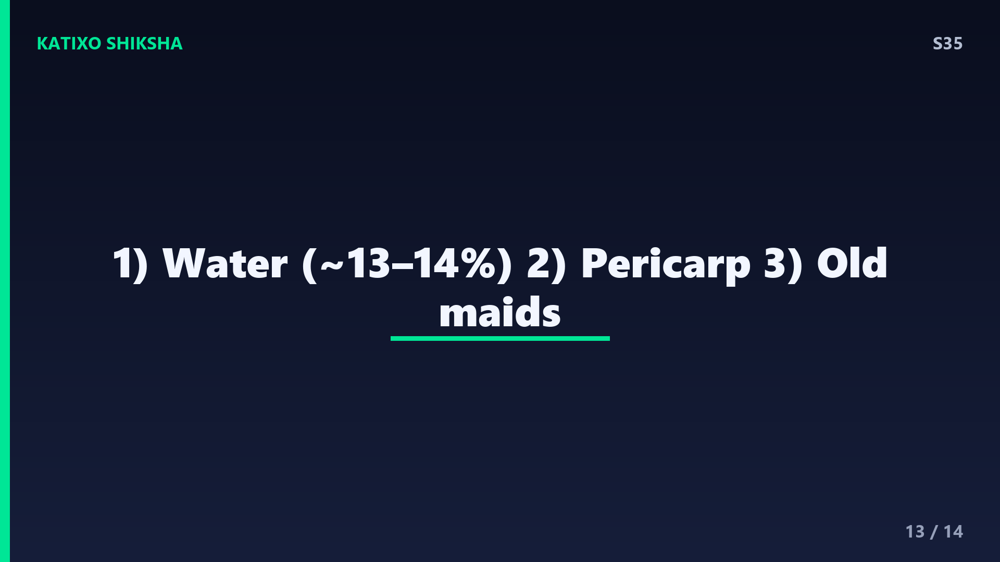

S35 — Popcorn आख़िर फूटता क्यों है?

Slide 1दोस्तों, movie देखते वक़्त एक चीज़ तो पक्की चाहिए — गरमा-गरम popcorn! कढ़ाई में डालो छोटे-छोटे सख्त दाने, थोड़ी आँच लगाओ, और फिर — पॉप! पॉप! पॉप! — वो दाने उछल-उछलकर फूले हुए सफ़ेद popcorn बन जाते हैं। पर कभी सोचा है, एक कठोर पीला दाना अचानक नरम सफ़ेद बादल में कैसे बदल जाता है? और हर दाना क्यों नहीं फूटता? आज Katixo Shiksha पर हम खोलेंगे popcorn का crunchy science. चलो, चूल्हे पर चढ़ते हैं!
Slide 2पहले एक राज़ की बात — हर मक्का popcorn नहीं बनता! जो मक्का तुम खाते हो — sweet corn या भुट्टा — वो कभी popcorn की तरह नहीं फूटेगा। popcorn एक special किस्म का मक्का है जिसका scientific नाम है Zea mays everta. इसकी सबसे खास बात है इसका छिलका — यानी outer shell, जिसे कहते हैं pericarp. ये छिलका बाकी मक्का के मुकाबले बहुत ज़्यादा सख्त और airtight होता है। और यही मज़बूत, बंद छिलका है popcorn के फूटने का असली हीरो। चलो आगे समझें कैसे।

Slide 3अब हर दाने के अंदर झाँको। हर popcorn kernel के अंदर तीन चीज़ें होती हैं — सख्त बाहरी छिलका pericarp, अंदर भरा हुआ नरम starch यानी मांड, और सबसे ज़रूरी — थोड़ा-सा पानी, करीब 13 से 14 percent! ये पानी की एक छोटी-सी बूँद दाने के बिल्कुल बीच में कैद रहती है। और यही पानी है पूरे धमाके का असली barood. बिना पानी के popcorn कभी नहीं फूटेगा। तो याद रखना — popcorn फूटने का सीक्रेट सिर्फ़ गर्मी नहीं, उसके अंदर छुपा पानी है।

Slide 4अब आँच चालू करो। जैसे-जैसे दाना गर्म होता है, अंदर कैद पानी गरम होने लगता है। तापमान करीब 100 degree Celsius पार करता है, तो पानी भाप यानी steam बनने की कोशिश करता है। पर वो मज़बूत airtight छिलका भाप को बाहर निकलने ही नहीं देता! भाप अंदर ही फँसी रहती है और दाने के अंदर pressure बढ़ता जाता है, बढ़ता जाता है। ये बिल्कुल pressure cooker जैसा है — एक छोटी-सी बंद दुनिया जिसमें भाप का दबाव लगातार ऊपर चढ़ रहा है। और कोई रास्ता नहीं!

Slide 5अब numbers सुनकर हैरान हो जाओगे। दाने के अंदर का तापमान करीब 180 degree Celsius तक पहुँच जाता है, और pressure इतना ज़बरदस्त — बाहर की हवा से करीब 9 गुना ज़्यादा! इतने भारी दबाव में वो नरम starch एकदम पिघलकर गरम, चिपचिपे जेल जैसा बन जाता है। यानी अंदर एक तरफ़ है उबलती भाप का जबरदस्त दबाव, और दूसरी तरफ़ है पिघला हुआ starch. ये combination तैयार कर देता है एक छोटे से धमाके की पूरी ज़मीन। बस अब छिलके के टूटने भर की देर है!

Slide 6और फिर — पॉप! जब अंदर का pressure इतना बढ़ जाता है कि छिलका और नहीं झेल पाता, तो वो अचानक फट जाता है। उसी पल अंदर की फँसी हुई भाप एकदम तेज़ी से बाहर फैलती है — और वो पिघला हुआ गरम starch भी झट से बाहर उछलकर फैल जाता है। बाहर की ठंडी हवा लगते ही ये starch तुरंत ठंडा होकर सख्त हो जाता है, उसी फूले हुए आकार में जम जाता है। और बन जाता है वो नरम, हल्का, सफ़ेद popcorn जो हम चाव से खाते हैं!
Slide 7अब एक मज़ेदार बात — popcorn अंदर-बाहर पलट जाता है! जो starch दाने के अंदर कैद था, वो फटने पर बाहर आ जाता है, और जो छिलका बाहर था वो अब अक्सर अंदर मुड़कर बीच में फँस जाता है — हाँ, वही जो कभी-कभी दाँत में फँसता है! और सबसे cool बात — एक popcorn फूटने पर अपने मूल आकार से करीब 40 से 50 गुना बड़ा हो जाता है। एक छोटा-सा सख्त दाना, और इतना बड़ा फूला हुआ बादल — सच में, ये kitchen की सबसे शानदार science है!

Slide 8अब सवाल — कुछ दाने क्यों नहीं फूटते? जो दाने कढ़ाई में बिना फूटे बच जाते हैं, उन्हें मज़े में कहते हैं old maids. इसकी सबसे बड़ी वजह है — उन दानों के अंदर पानी कम होता है, या उनका छिलका कहीं से थोड़ा cracked होता है। अगर पानी कम हो तो भाप ही कम बनेगी, और pressure इतना नहीं चढ़ेगा कि धमाका हो। और अगर छिलके में दरार हो, तो भाप चुपके से निकल जाती है और दबाव बनता ही नहीं। यानी popcorn को चाहिए — सही पानी और पूरा airtight छिलका, दोनों!
Slide 9इसीलिए popcorn को सही तरीके से रखना बहुत ज़रूरी है। अगर तुम popcorn के दानों को बहुत देर खुली हवा में या बहुत सूखी जगह रख दो, तो अंदर का पानी धीरे-धीरे उड़ जाता है — और फिर वो ठीक से नहीं फूटते। एक पुराना jugaad है — अगर बहुत सारे दाने न फूट रहे हों, तो उन्हें एक airtight डिब्बे में थोड़े पानी के छींटे डालकर कुछ दिन रख दो, ताकि वो थोड़ी नमी सोख लें। Science समझ लो, तो रसोई में भी तुम चैंपियन बन सकते हो, दोस्तों!

Slide 10थोड़ा इतिहास भी जान लो — popcorn बहुत-बहुत पुराना है! हज़ारों साल पहले अमेरिका के native लोग popcorn बनाकर खाते थे, और पुराने खुदाई वाले स्थानों से हज़ारों साल पुराने popcorn के दाने तक मिले हैं। मतलब, ये कोई modern movie-snack नहीं — ये इंसानों के सबसे पुराने तैयार किए हुए snacks में से एक है! और मज़ेदार बात — यही वो इकलौती किस्म का मक्का है जो इस तरह फूटकर खाने लायक फूला हुआ रूप बनाता है। नन्हे दाने में इतना बड़ा इतिहास, कमाल है ना!
Slide 11अब पूरी कहानी एक साथ जोड़ें। एक special मक्का जिसका छिलका सख्त और airtight है, अंदर थोड़ा पानी और नरम starch. आँच लगते ही पानी भाप बनता है, छिलका उसे रोकता है, अंदर pressure और तापमान ज़बरदस्त बढ़ते हैं, starch पिघलता है — और जब छिलका सहन नहीं कर पाता, तो पॉप! भाप फैलती है, starch बाहर आकर ठंडा होकर जम जाता है, और तैयार है crunchy popcorn. एक नन्हे दाने में छुपा pressure, steam और starch का पूरा खेल — बस यही है popcorn का science!
Slide 12Quick brain check! Video pause करो और तीनों सवालों के जवाब सोचो। पहला — popcorn के दाने के अंदर वो कौन-सी चीज़ है जो भाप बनकर पूरा धमाका करवाती है? दूसरा — दाने का वो सख्त, airtight बाहरी छिलका जो भाप को रोकता है, उसे क्या कहते हैं? और तीसरा — जो दाने बिना फूटे रह जाते हैं, उन्हें मज़े में किस नाम से बुलाते हैं? सोचो ज़रा... हिंट — एक की कमी से दाना नहीं फूटता। Ready? चलो answers देखते हैं!

Slide 13जवाब! पहला — दाने के अंदर भाप बनाकर धमाका करवाने वाली चीज़ है पानी, जो करीब 13 से 14 percent होता है। दूसरा — वो सख्त, airtight बाहरी छिलका जो भाप को रोकता है, उसे कहते हैं pericarp. और तीसरा — जो दाने बिना फूटे रह जाते हैं, उन्हें मज़े में कहते हैं old maids, और इसकी वजह अक्सर कम पानी या cracked छिलका होता है। तीनों सही? वाह, तुम तो popcorn के असली scientist बन गए — शाबाश!
Slide 14तो आज हमने सीखा — popcorn एक special मक्का है जिसके airtight छिलके के अंदर कैद पानी गर्म होकर भाप बनता है, pressure बढ़ता है, starch पिघलता है, और छिलका फटते ही पॉप — बन जाता है crunchy popcorn! पानी और छिलका, दोनों सही हों तभी जादू होता है। इस episode के साथ हमारी ये मज़ेदार series का एक पड़ाव पूरा हुआ — forgetting से लेकर popcorn तक! अगली बार और भी दिलचस्प सवाल लेकर आएँगे। Subscribe करना मत भूलना दोस्तों! Bye!